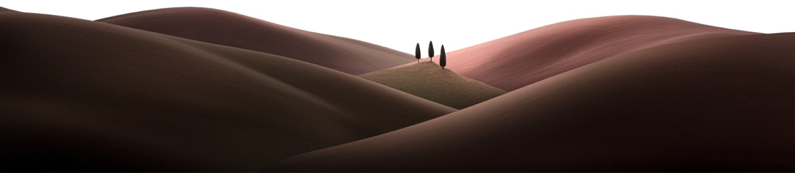

Každý projekt
nese svůj podpis.
Partner stavebních projektů.
Pomáháme projektantům, architektům, developerům i majitelům nemovitostí řešit energetickou stránku staveb.
Nejde jen o energetiku. Jde o celý projekt.
Každý stavební projekt je výsledkem spolupráce desítek profesí. Energetická část je jednou z nich — ale často rozhoduje o tom, jestli projekt projde bez komplikací.
Nevnímáme ji jako povinný dokument na konci. Jsme partnerem, který nad projektem přemýšlí od začátku a hledá řešení, jež dávají technický, legislativní i ekonomický smysl.
Proto s námi dlouhodobě spolupracují projektanti, architekti i developerské společnosti po celé republice.

Dobré budovy nevznikají náhodou.
Jedno písmeno. A všechna rozhodnutí, která k němu vedla.
Třída budovy je výsledek, ne cíl. Vzniká z tvaru, orientace, obálky a zdroje tepla — tedy z rozhodnutí, která padnou dávno před tím, než někdo vystaví průkaz.
Čím dřív jsme u toho, tím víc se s výsledkem dá dělat.

Nevěřím v anonymní zpracování dokumentů.
Jmenuji se Sandra Schwarzová a energetice staveb se věnuji s jediným cílem — být partnerem, na kterého se projektanti i investoři mohou spolehnout v každé fázi projektu.
Věřím v odbornou spolupráci, otevřenou komunikaci a hledání řešení, která budou fungovat nejen dnes, ale i za mnoho let.
Právě na těchto hodnotách vznikla značka Signery.
Signery je podpisem odbornosti.
Projektanti, architekti a developeři
Partner, který rozumí projektům, dodržuje termíny a dokáže být součástí vašeho týmu.
Vstoupit do sekcePotřebuji PENB
Prodáváte, pronajímáte nebo stavíte? Provedeme vás celým procesem jednoduše a bez zbytečné administrativy.
Vstoupit do sekceEnergetická řešení nejsou o jednom dokumentu.
Jsou o správných rozhodnutích během celého projektu.
Průkazy energetické náročnosti
Včetně souboru XML pro Ministerstvo průmyslu a obchodu a vysvětlení, co výsledek znamená.
Energetické posudky
Posouzení variant zdrojů a opatření včetně ekonomického vyhodnocení.
Energetické výpočty
Podklady pro rozhodování v projektu, ne jen čísla do spisu.
Konzultace projektů
Energetický pohled na návrh ve fázi, kdy se s ním ještě dá hýbat.
Optimalizace energetické náročnosti
Nejlevnější cesta ke splnění požadavku — obálka, zdroj, systémy.
Odborná podpora projektantů
Průběžná spolupráce po celou dobu projektu, ne jednorázová dodávka.
Čtyři důvody, proč s námi lidé zůstávají.
Myslíme v souvislostech
Neřešíme jednotlivé výpočty. Přemýšlíme nad celým projektem.
Komunikujeme rychle
Respektujeme termíny projektů. Dobrá komunikace je stejně důležitá jako odborné znalosti.
Hledáme řešení
Naším cílem není říkat, proč něco nejde. Ale najít cestu, jak projekt dokončit.
Budujeme partnerství
Nechceme být dodavatelem jedné zakázky. Chceme být partnerem, kterému svěříte projekty dlouhodobě.
Každý projekt
si zaslouží partnera.
Ať navrhujete bytový dům, rodinný dům, nebo právě řešíte prodej své nemovitosti — rádi se staneme součástí vašeho projektu.